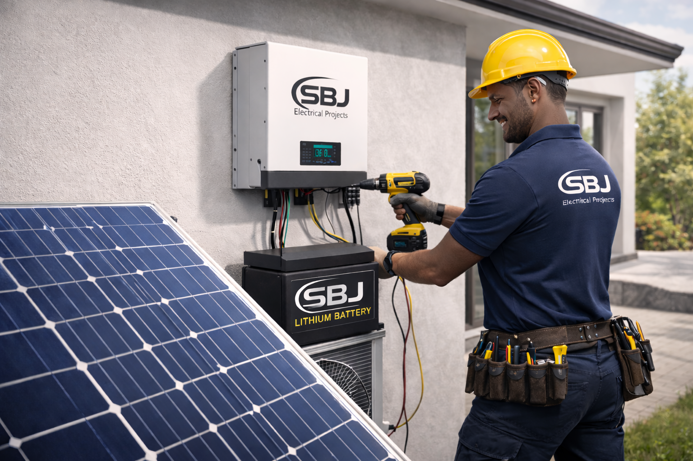

Professional solar solutions for residential and commercial properties across Durban and KwaZulu-Natal.

SBJ Electrical Projects provides professional solar installation in Durban and throughout KwaZulu-Natal. We specialise in hybrid solar systems, grid-tied solar installations and off-grid backup power solutions designed to reduce electricity costs and protect your home or business during load shedding.
Our certified solar installers in KZN design custom systems using high-performance inverters and lithium battery storage to ensure maximum efficiency, reliability and long-term energy independence. Whether you require residential solar in Durban or commercial solar solutions across KZN, we deliver compliant, high-quality installations tailored to your property and energy usage.
Request Quote